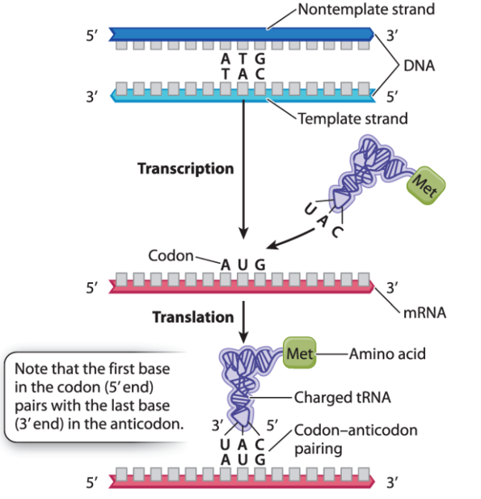

Walkthrough:
-
Identify all start codons (5'-ATG-3' sequences). These are found on the CODING strand (see Key Point #1).
-
Determine which potential start codon codes for the correct number of amino acids before reaching a stop codon.
-
Transcribe the transcribed region to RNA (see Key Point #3).
-
Use the codon table to convert the identified translated region to a peptide sequence.
Key Ideas:
-
Double-stranded DNA is complementary and antiparallel.
-
A will always be matched with T (DNA) or U (RNA), while C will always be matched with G.
-
5' ends will always be matched with 3' ends. When synthesizing new DNA or RNA, the template DNA strand is read in the 3'-5' direction so that the new strand is synthesized in the 5'-3' direction. Because of complementarity, the new strand will be identical to the coding DNA strand (except that T's become U's when translating to RNA).
-
DNA and RNA are always synthesized in the 5'-3' direction.
-
This is because new bases can only be added to a free 3' OH group. This is also why the template DNA strand is always read in a 3'-5' direction.
-
The TRANSCRIBED region starts at the +1 site and ends at the terminator, while the TRANSLATED region starts at the start codon and ends just before the stop codon.
-
The +1 site is defined as the first base to be transcribed into RNA.
-
Stop codons do not code for anything; they serve only to stop translation from continuing.
-
The translated region must be contained within the mRNA transcript (i.e. between the +1 site and the terminator).
-
Start codons are always 5'-AUG-3'.
-
Because mRNA is translated from 5'-3', start codons cannot be 3'-AUG-5' (this would be read 5'-GUA-3', which codes for valine).
-
Start codons are found in mRNA that has been translated from the template DNA strand, which is complementary and antiparallel. Because the coding DNA strand is identical to the mRNA strand (exchanging T's for U's), start codons are easily found in the coding strand as 5'-ATG-3'. This pairs with 3'-TAC-5' in the template strand.
